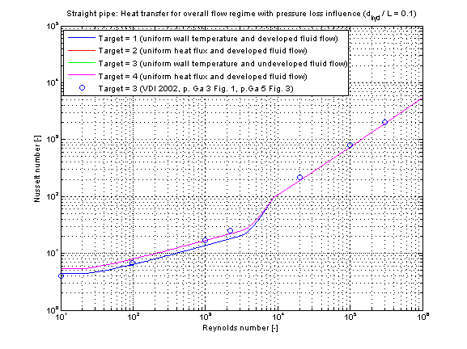

Calculation of mean convective heat transfer coefficient kc of a straight pipe at an uniform wall temperature or uniform heat flux and for a hydrodynamically developed or undeveloped laminar or turbulent fluid flow with neglect or consideration of pressure loss influence.
There are basically three differences:
This heat transfer function enables a calculation of heat transfer coefficient for laminar and turbulent flow regime. The geometry, constant and fluid parameters of the function are the same as for kc_laminar and kc_turbulent.
The calculation conditions for laminar and turbulent flow is equal to the calculation in kc_laminar and kc_turbulent. A smooth transition between both functions is carried out between 2200 ≤ Re ≤ 10000 (see figure below).
The mean Nusselt number Nu representing the mean convective heat transfer coefficient kc is shown for the fluid properties of Water (Prandtl number Pr = 7) and a diameter to pipe length fraction of 0.1 in the figure below.
The following verification considers pressure loss influence (roughness =2).
